Notation
Staves
In western music, pitches and rhythms are notated on a staff. The two main staves you will see in music theory are the treble staff and the bass staff.
When a treble and bass staff are stacked on top of one another, it's called a grand staff.
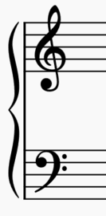
Rhythm
The shape of a note tells us how long a note is played for.
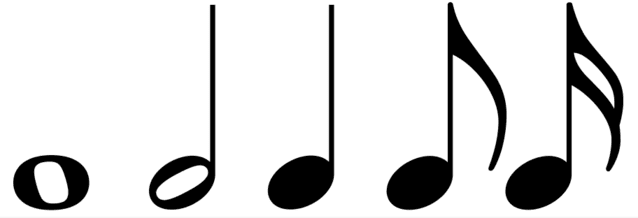
Pitch
The vertical position of a note on the staff tells us what pitch to play. A note placed higher on the staff will result in a higher pitched note.
Common ways to remember the notes on the treble clef:
- The notes on the lines of the treble clef, from bottom to top, can be remembered by the phrase: Every Good Boy Does Fine
- The notes in the spaces of the treble clef, from bottom to top, can be remembered with the word FACE
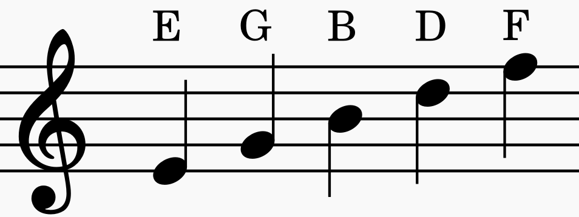
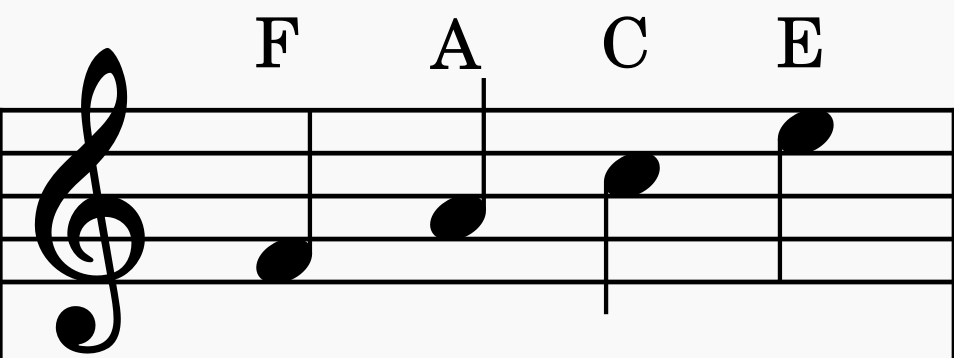
Common ways to remember the notes on the bass clef:
- The notes on the lines of the bass clef, from bottom to top, can be remembered by the phrase: Good Boys Do Fine Always
- The notes in the spaces of the bass clef, from bottom to top, can be remembered by the phrase: All Cows Eat Grass
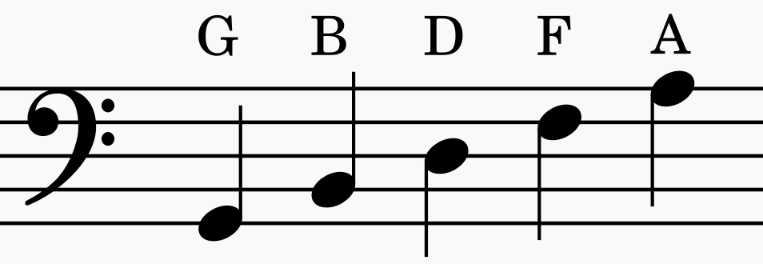
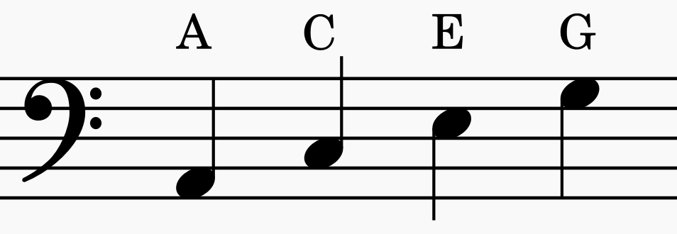
Roman Numeral Chords
When analyzing the harmony of a piece of music, we use roman numerals to represent each degree of the scale so that no matter what key the piece is in, the function of the harmony can be analyzed.
When writing out roman numeral chords, capital roman numerals represent major chords, and lowercase roman numerals represent minor chords. (A chord with a "o" means the chord is diminished).
Major Keys
In a major key, chords follow the pattern of major, minor, minor, major, major, minor, and diminished.
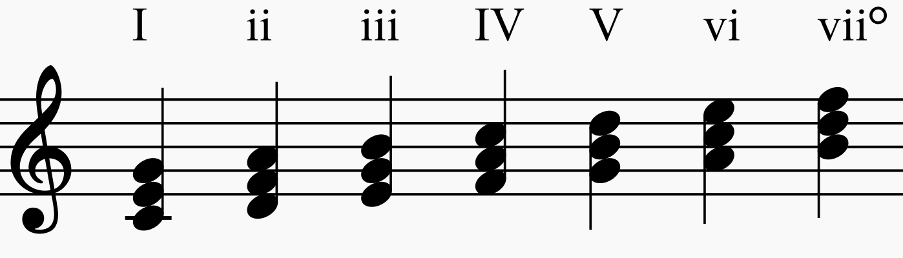
Minor Keys
In a minor key, chords follow the pattern of minor, diminished, major, minor, minor, major, and major.
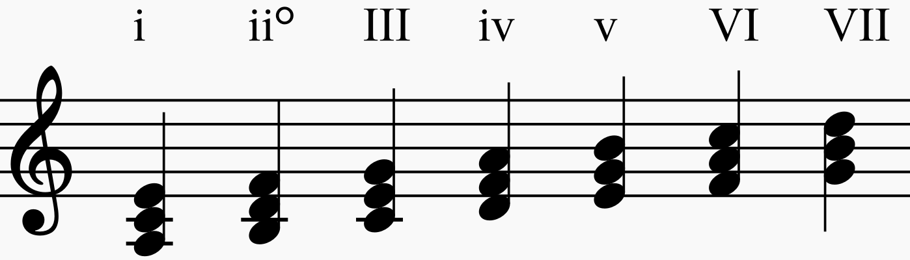
But, in minor keys, it is also common to use the leading tone to create the major five chord and the diminished seven chord.
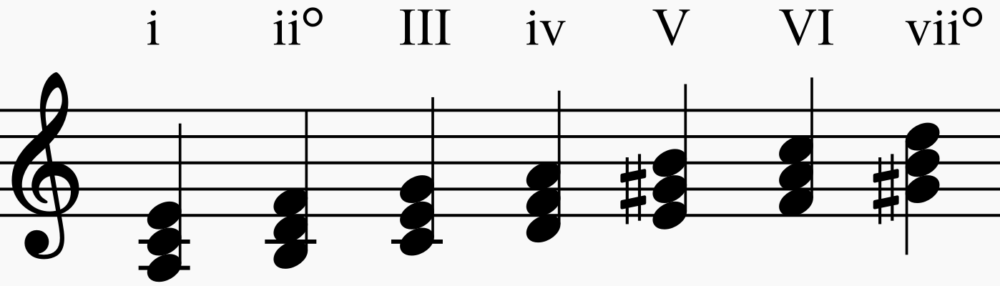
Voice Leading
Voice leading has a lot of rules, as well as a lot of acceptations. These are just the basic rules taught in most music theory classes, but keep in mind there are times when these rules might be broken!
Vocal Ranges
- Soprano: C4-G5
- Alto: G3-D4
- Tenor: C3-G4
- Bass: E2-C4
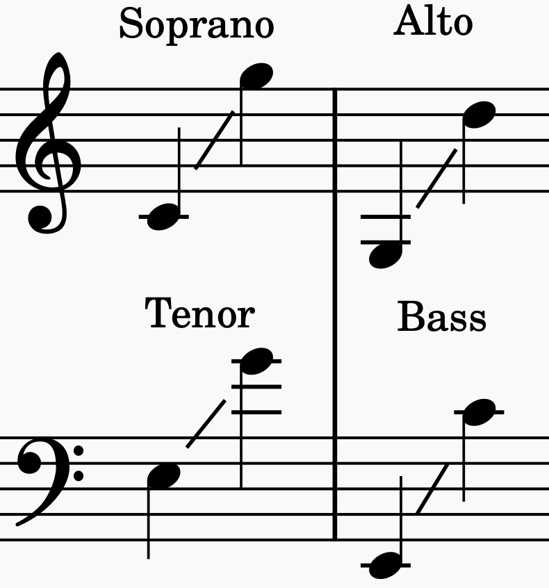
Spacing Rules
- No more than one octave between adjacent voices (excluding space between tenor and bass)
- No parallel octaves
- No parallel fifths
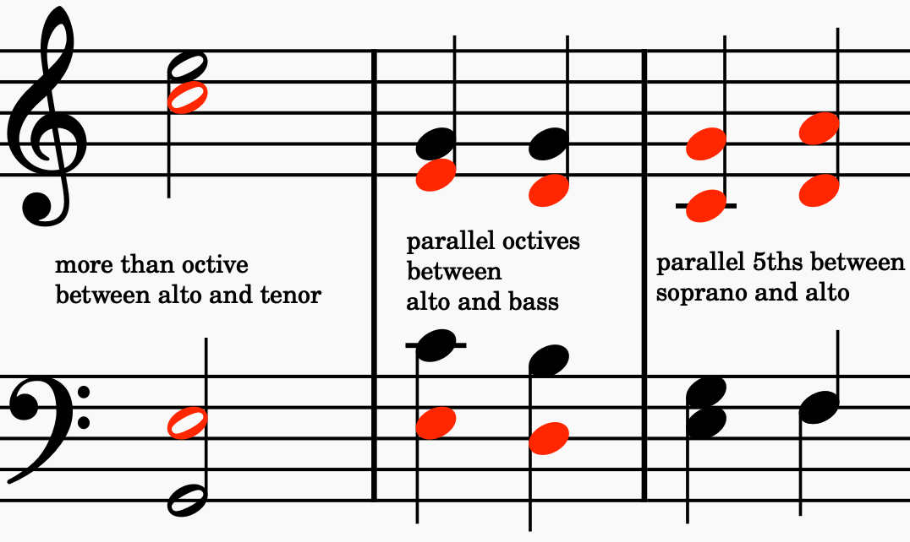
Resolutions
- Scale degrees 2, 4, and 6 tend to resolve down
- Scale degree 7 (the leading tone) should almost always resolve up
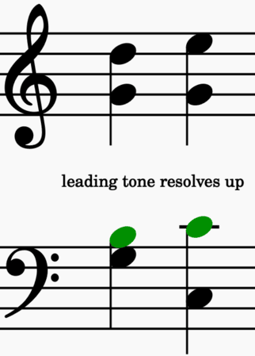
Intervals
- Avoid large leaps (more than a 4th)
- Avoid leaping an augmented interval (including the tritone)
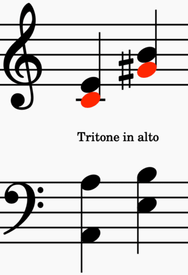